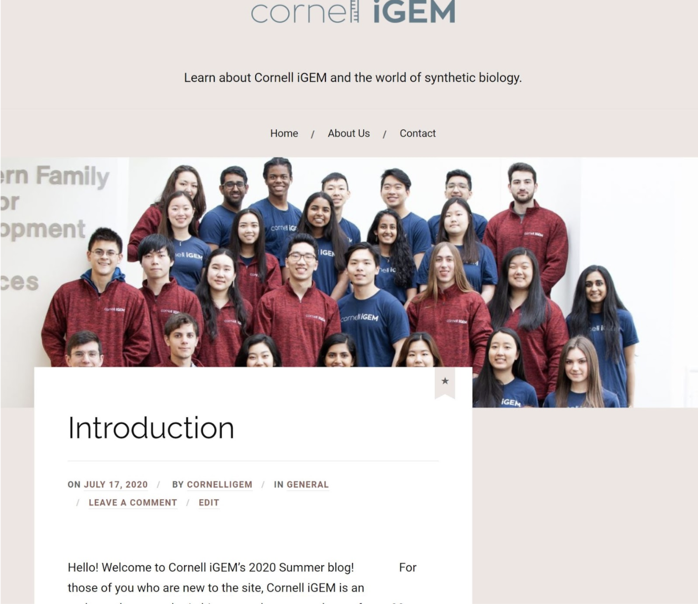
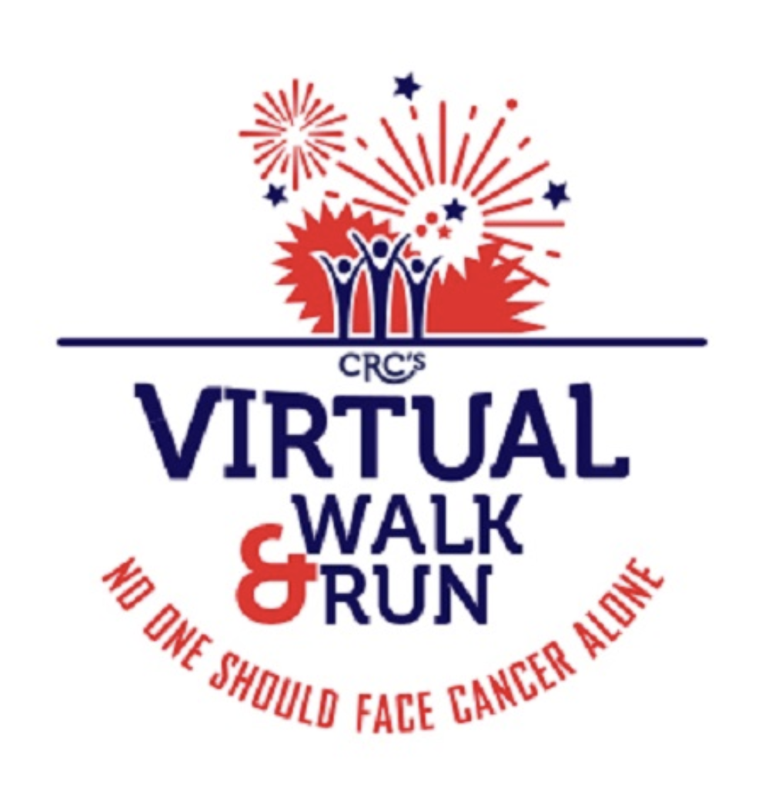

While this year has certainly presented its challenges, Cornell iGEM is still determined to continue our mission of meaningfully engaging with the public. With all of our members scattered across the nation, we reimagined our outreach initiatives. We turned to a virtual format, allowing us to participate in different events:
- We made initiatives more accessible by starting a blog.
- We guided a student on higher-level education through a mentorship program.
- We participated in a Walk & Run Fundraiser.
- We presented and continue to reach out to students interested in biology and engineering research.
Eager to continue educating the public while operating virtually, Cornell iGEM searched for a way to reach our community in a safe, accessible way. Our idea was to start a WordPress blog. Updating twice a week, we cover a range of topics,
including updates of our research operations, safe experiments for children to try at home, and history of the synthetic biology field. By writing about a variety of topics, we are able to reach a wide audience, from children interested
in science to members of other iGEM teams.
The blog has allowed us to develop our writing skills as well as our critical analysis skills. While writing a post, we made sure to research a topic thoroughly, so as to make sure what we posted would be accurate. In researching topics,
we reviewed the literature we read, to make sure we were using reliable information.
Even though this competition season is coming to a close, we are continuing to post on our blog and promote it on various social media accounts. As we grow our platform, we remain dedicated to fostering an interest in synthetic biology.
You can read our blog here.

The Cancer Resource Center of the Finger Lakes provides a community for people living with and affected by cancer. As always, Cornell iGEM is committed to staying engaged with our community. This year, we formed a team to participate in
the CRC’s first ever Virtual Walk & Run fundraiser. Our members were located across the nation while participating in the virtual Walk & Run. Because of this, we were able to raise awareness about the CRC on social media and help increase
the span of their reach beyond Tompkins County. We were also able to raise funds to help continue services provided by the CRC.
The CRC continues to accept donations throughout the year. You can donate here.

This summer, Cornell iGEM participated in a 4H mentorship program for high schoolers with the Cornell Nanoscale Facilities. The program, which took place completely over Zoom, allowed our team to introduce Shakyna, a rising senior from
Buffalo, New York, to the field of synthetic biology. We spoke to her about our team, our brainstorming process and past projects. Shakyna was new to the college application process, and knew very little about the undergraduate
experience. We were able to share our experiences and offer advice about pursuing higher education. Shakyna was intrigued by the possibility of combining her interest in art with biology, and we reassured her that her unique skills will
have a place in design synthetic biology and engineering.
Another crucial part of our project is the fluorescent scanner. Introducing mCardinal into the body, we need to be sure that it will all dissolve or be expelled from the body after it has accomplished its tasks. Lingering and
accumulating mCardinal over time could pose a threat to patients. mCardinal is water soluble, so accumulation over time will not be a problem. Regulating the amount of mCardinal within the body is another precaution taken to prevent
potential risks. Another consideration with fluorescence is the possible risks of red light [2]. Utilizing low-level light therapy, no harmful tumor growth has been found.
We recommend that Lumicure be taken in conjunction with other breast cancer therapies as it will not completely eradicate breast cancer. Similar to chemotherapy, Lumicure will not destroy all breast cancer tumors, but it will work to
minimize the cancer.
Committed to raising awareness about synthetic biology, Cornell iGEM gave several virtual presentations to different organizations and classes on campus. Over Zoom, we spoke to several students about our team, our work process, and the field of synthetic biology.
The Biomedical Engineering Society (BMES) is an undergraduate chapter that fosters passion for biomedical engineering at Cornell. On September 14th, we gave a presentation to approximately 40 people about our team’s research and goals for this year. With this presentation, we were able to publicize our team and the field of synthetic biology on the Cornell campus.
During their freshman year at Cornell, engineering students take the course ENGRG 1050 as a way to get to know the engineering faculty and fellow students on campus. We gave a short presentation in different sections of ENGRG 1050 introducing the field of synthetic biology. We described what we do as a team and how to join. We fielded questions the students had about the team’s research, and student life in general.
In the future, we have scheduled an additional outreach presentation with the Introduction to BME class at Cornell. This class explores a variety of biomedical topics and exposes undergraduates to potential engineering career paths. We plan to present information about our project team, our current research, as well as our future plans.